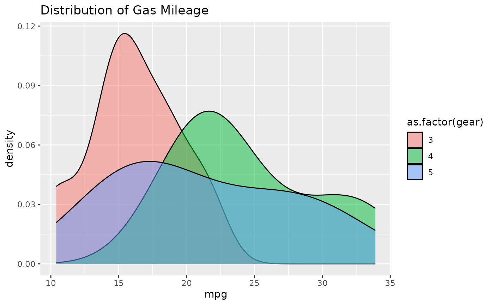

The following manual will present various ways to add plots and
charts to openxlsx2 worksheets and even chartsheets. This
assumes that you have basic knowledge how to handle
openxlsx2 and are familiar with either the default
R graphics functions like plot()
or barplot() and grDevices, or with the
packages ggplot2, rvg or
mschart. There are plenty of other manuals that cover
using these better than we could ever tell you to.
library(openxlsx2) # openxlsx2 >= 0.4 for mschart and rvg support
## create a workbook
wb <- wb_workbook()Add plot to workbook
You can include any image in PNG or JPEG format. Simply open a device
and save the output and pass it to the worksheet with
wb_add_image().
Add {ggplot2} plot to workbook
You can include ggplot2 plots similar to how you would
include them with openxlsx. Call the plot first and
afterwards use wb_add_plot().
if (requireNamespace("ggplot2")) {
library(ggplot2)
p <- ggplot(mtcars, aes(x = mpg, fill = as.factor(gear))) +
ggtitle("Distribution of Gas Mileage") +
geom_density(alpha = 0.5)
print(p)
# Add ggplot to the workbook
wb$add_worksheet("add_plot")$
add_plot(width = 5, height = 3.5, file_type = "png", units = "in")
}
#> Loading required namespace: ggplot2
Add plot via {rvg}
If you want vector graphics that can be modified in spreadsheet
software the dml_xlsx() device comes in handy. You can pass
the output via wb_add_drawing().
if (requireNamespace("ggplot2") && requireNamespace("rvg")) {
library(rvg)
## create rvg example
p <- ggplot(iris, aes(x = Sepal.Length, y = Petal.Width)) +
geom_point() +
labs(title = "With font Bradley Hand") +
theme_minimal(base_family = "sans", base_size = 18)
tmp <- tempfile(fileext = ".xml")
rvg::dml_xlsx(file = tmp, fonts = list(sans = "Bradley Hand"))
print(p)
dev.off()
# Add rvg to the workbook
wb$add_worksheet("add_drawing")$
add_drawing(xml = tmp)$
add_drawing(xml = tmp, dims = NULL)
}
#> Loading required namespace: rvgAdd {mschart} plots
If you want native open xml charts, have a look at
mschart. Create one of the chart files and pass it to the
workbook with wb_add_mschart(). There are two options
possible. 1. Either the default mschart output identical
to the one in officer. Passing a data object and let
mschart prepare the data. In this case
wb_add_mschart() will add a new data region. 2. Passing a
wb_data() object to mschart. This object
contains references to the data on the worksheet and allows using data
“as is”.
if (requireNamespace("mschart")) {
library(mschart) # mschart >= 0.4 for openxlsx2 support
## create chart from mschart object (this creates new input data)
mylc <- ms_linechart(
data = browser_ts,
x = "date",
y = "freq",
group = "browser"
)
wb$add_worksheet("add_mschart")$add_mschart(dims = "A10:G25", graph = mylc)
## create chart referencing worksheet cells as input
# write data starting at B2
wb$add_worksheet("add_mschart - wb_data")$
add_data(x = mtcars, dims = "B2")$
add_data(x = data.frame(name = rownames(mtcars)), dims = "A2")
# create wb_data object this will tell this mschart
# from this PR to create a file corresponding to openxlsx2
dat <- wb_data(wb, dims = "A2:G10")
# create a few mscharts
scatter_plot <- ms_scatterchart(
data = dat,
x = "mpg",
y = c("disp", "hp")
)
bar_plot <- ms_barchart(
data = dat,
x = "name",
y = c("disp", "hp")
)
area_plot <- ms_areachart(
data = dat,
x = "name",
y = c("disp", "hp")
)
line_plot <- ms_linechart(
data = dat,
x = "name",
y = c("disp", "hp"),
labels = c("disp", "hp")
)
# add the charts to the data
wb <- wb %>%
wb_add_mschart(dims = "F4:L20", graph = scatter_plot) %>%
wb_add_mschart(dims = "F21:L37", graph = bar_plot) %>%
wb_add_mschart(dims = "M4:S20", graph = area_plot) %>%
wb_add_mschart(dims = "M21:S37", graph = line_plot)
# add chartsheet
wb <- wb %>%
wb_add_chartsheet() %>%
wb_add_mschart(graph = scatter_plot)
}
#> Loading required namespace: mschart